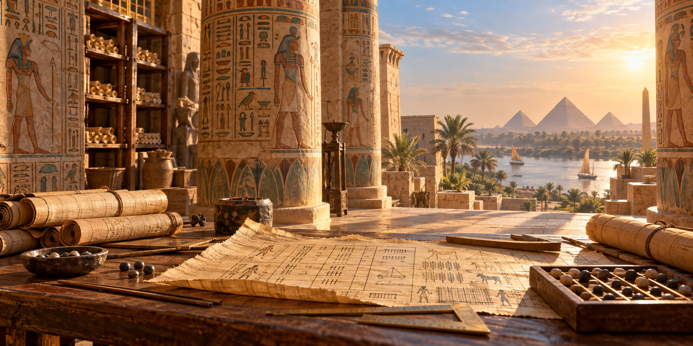
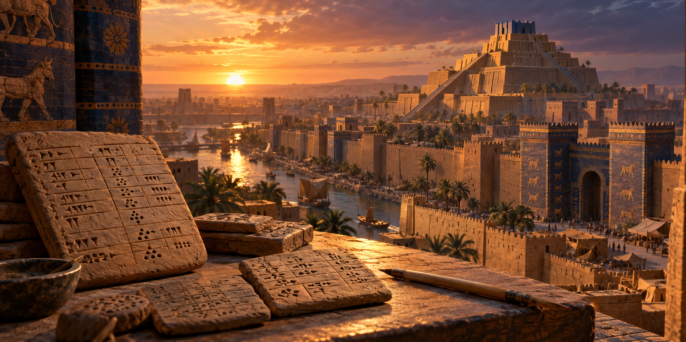
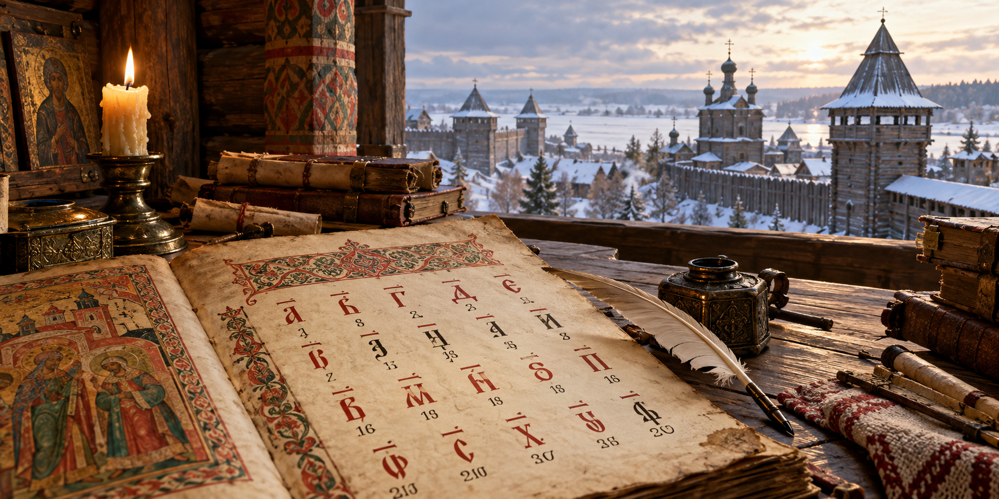

Египет
Древний Египет
Аддитивная система. Значения знаков складывались.Сравниваем системы чисел
Перед вами записи из архива НИИ Времени. В разных цивилизациях люди использовали разные способы записи чисел. Изучите примеры и ответьте на вопрос.
Используйте таблицу с примерами. Введите ответ арабскими цифрами.

Древний Египет
Аддитивная система. Значения знаков складывались.
Древняя Месопотамия
Позиционная система с основанием 60.Древний Рим
Буквенные обозначения с правилами сложения и вычитания.
IX–XVII века
Буквы славянского алфавита со специальными знаками.